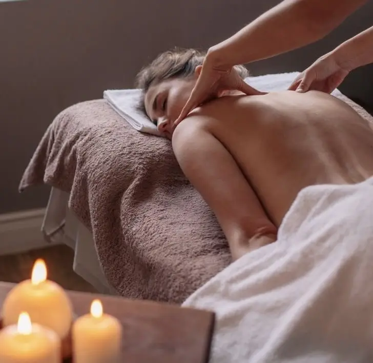
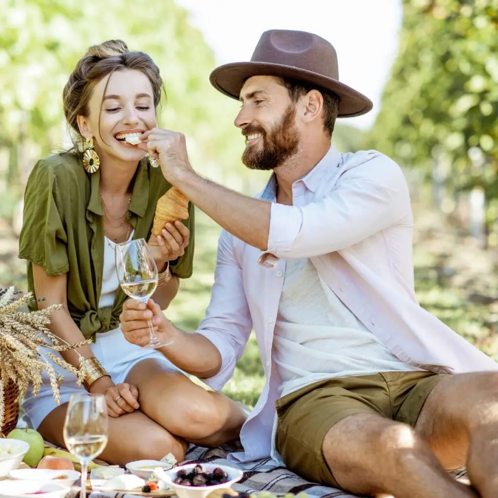
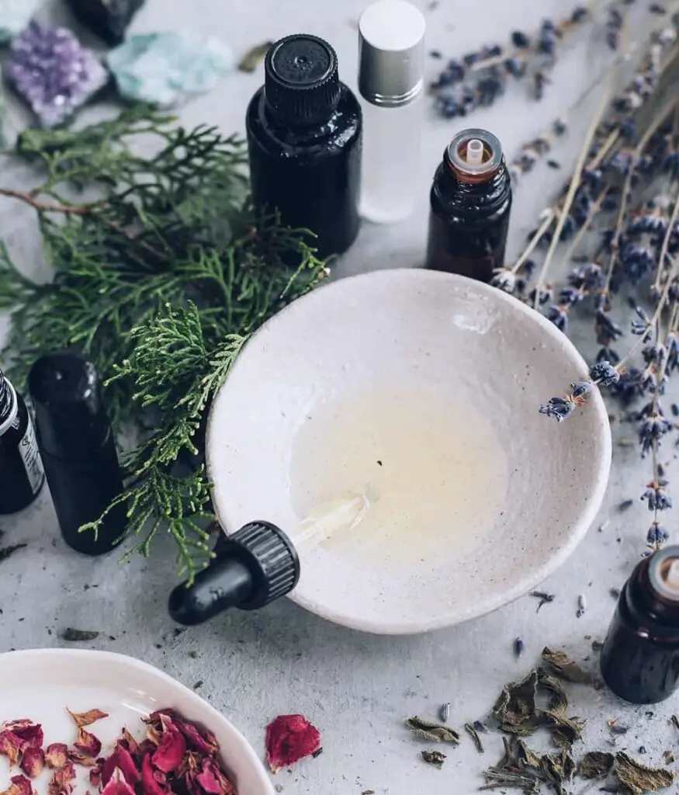
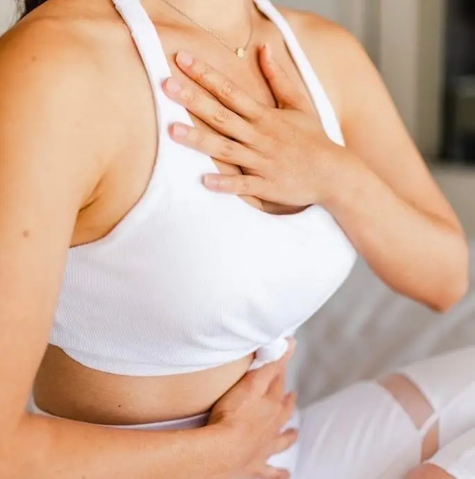
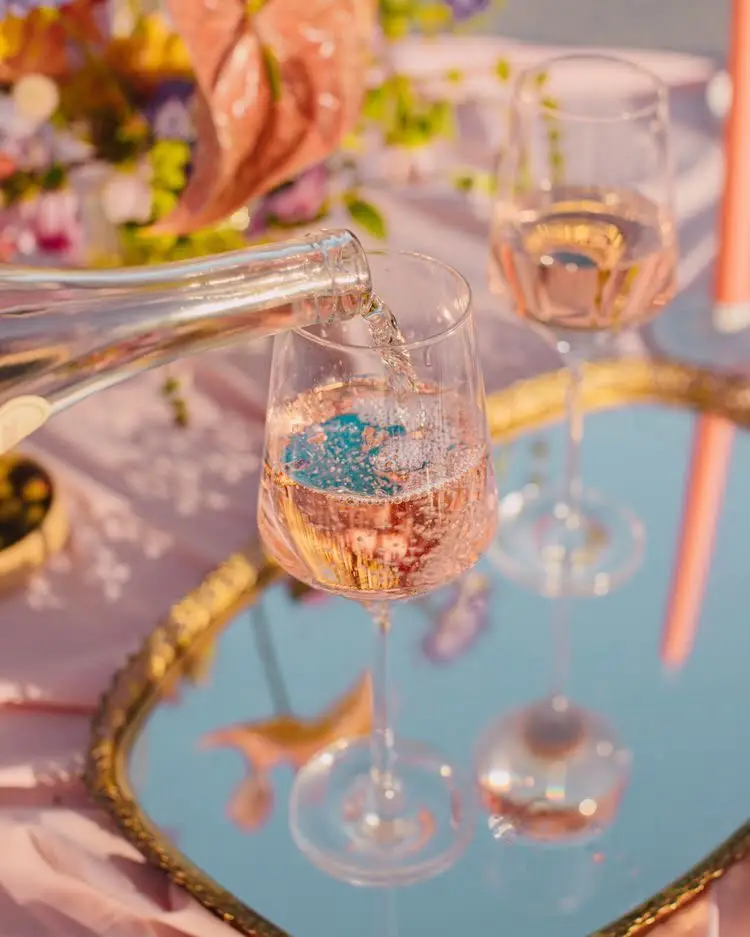

Organising your wedding is never easy. This long-awaited event can sometimes bring couples a huge dose of stress. Today I've decided to share a few tips for a stress-free day, to help you relax in the days before the wedding and of course on the big day itself, so that only the happiness remains!
My tips for a stress-free day
-Delegate-
First, it is important to know how to delegate. Between the preparations and the logistical details, it's normal not to know which way to turn.
Delegating to loved ones can sometimes feel a little daunting, and that's normal: your wedding is probably one of the most beautiful days of your life, so it has to be perfect.
That's where I come in. Calling on a wedding planner means having an expert in detail and organisation. I know many quality suppliers in the Gironde, and of course I'll give you decor that reflects who you are. Hiring me as your wedding planner will save you time, but also let you approach your wedding differently and, above all, more calmly. More than just a supplier, I'll be with you from start to finish of this unique, unforgettable experience so you can enjoy this precious day without stress.


-Get a massage-
To keep stress at bay, it is important to take time for yourself and relax. A massage will give you a break from the preparations. A relaxing massage can help you unwind and improve your emotional wellbeing. Massages can even stimulate the release of endorphins, the "happiness hormones", which can help steady your mood.
-Spend time together-
It may seem trivial, but spending time together and reconnecting is essential to help you approach the wedding day with serenity and joy. Whatever activity you choose, such as a picnic in Bordeaux's Parc Bordelais, the key is to create a relaxing space where you can connect, laugh and focus on the love and commitment ahead.


-Aromatherapy-
The big day is often the most stressful moment of all the preparations, even when everything is perfectly organised. Rest assured, you're not alone!
Soothing yourself with scents is one way to stay calm on the big day. Aromatherapy is a method that has shown convincing results. Essential oils, extracted from plants, can have relaxing and calming properties. A few drops of essential oil applied to the skin or diluted in a diffuser, and calm is guaranteed!
-Breathing exercises-
We often hear about breathing exercises because they have proved their worth.
The key is to choose an exercise that suits you best and can easily be built into your routine on the wedding day. Breathing exercises can help reduce stress, calm the nerves and create a calm, centred state of mind so you can fully enjoy this special day.


-Treat yourselves-
And above all, don't forget to enjoy the present moment. This event will only happen once in your life, so live it to the full without putting pressure on yourselves or worrying about what others think. This day is yours and it should be 100% you.
Why not a little glass of champagne to help you relax? No one will hold it against you!
Lovely Day Event offers several services
Wedding planning
I step in at every stage of your preparations and guide you through your choices, bringing ideas and suggestions so that your wedding looks like no one but you.
Wedding design
Creative and passionate, I am a certified Wedding Designer and I create a scenographic atmosphere that matches the theme of your wedding.
On-the-day coordination
I will be the conductor of your day, managing the suppliers, the set-up of your decor and the smooth running of this beautiful day.